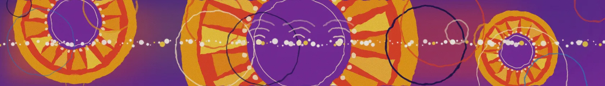

Análises

Três cidades, três comunicações
Existem hoje no Brasil 466.106 empresas ativas cujo negócio declarado é jornalismo, publicidade, audiovisual, design ou fotografia. Uma em cada cinco está em São Paulo.
Esse número é o ponto de partida de uma pergunta que não se resolve somando: as três cidades onde esta pesquisa vai a campo — Fortaleza, Brasília e São Paulo — não são versões maiores e menores da mesma coisa. Elas fazem comunicação de tipos diferentes, e a diferença é grande o bastante para mudar quem responde a um questionário em cada uma.
O universo: o que conta como trabalho em comunicação
Antes de qualquer comparação foi preciso decidir o que entra. O cadastro de empresas da Receita Federal classifica cada CNPJ por atividade econômica, e o recorte usado aqui reúne 24 dessas atividades em cinco famílias:
| Família | Atividades | Brasil |
|---|---|---|
| Audiovisual | produção de filmes, pós-produção, dublagem, mixagem sonora, estúdios, distribuição, gravação de som | 155.920 |
| Fotografia | produção fotográfica, filmagem de eventos, laboratórios, fotografia aérea | 129.567 |
| Publicidade | agências, marketing direto, consultoria, outras atividades de publicidade | 112.154 |
| Jornalismo | jornais diários, jornais não diários, revistas, agências de notícias | 58.340 |
| Design | design gráfico e web design | 10.125 |
O recorte é deliberadamente do ofício, não da cadeia econômica em volta dele. Ficaram de fora atividades que orbitam a comunicação sem serem trabalho de comunicação: promoção de vendas, desenvolvimento de software sob encomenda, pesquisa de mercado e opinião pública, agenciamento de espaços publicitários e criação de estandes para feiras. São intermediação, tecnologia ou montagem — não produção de conteúdo. Design de interiores, pela mesma razão, não entra; design gráfico e web design entram, porque são criação.
Três exclusões merecem número, porque explicam a escala.
A maior é "Promoção de vendas", sozinha com 751.942 empresas ativas — mais que todas as 24 categorias acima somadas. É o código usado em massa por representante comercial autônomo e revendedor porta a porta. Mantê-la triplicaria o universo com um público que a pesquisa não procura e distorceria todas as proporções entre cidades.
A segunda saiu depois de ser testada. "Portais e provedores de conteúdo" (6319-4/00) parecia o código natural para o jornalismo digital, mas não é o que ele guarda: entre as maiores empresas registradas sob ele estão a Brasmotor (holding do grupo Whirlpool), a REAG Investimentos, a fintech de pagamentos Zapay e a TC S.A., de informação financeira. É um guarda-chuva fiscal para qualquer negócio que opere por site, e admiti-lo enche o universo de empresas que não têm ninguém produzindo conteúdo. Eram 28.902 no país. Ficaram de fora.
A terceira é involuntária e curiosa. O código "Design" (7410-2/01) tem zero empresas ativas no país inteiro — nenhuma, em nenhuma cidade, em nenhuma situação cadastral. É um código que existe na classificação oficial e que ninguém usa: quem faz design se registra em "outras atividades de design", com 5.183. O tipo de detalhe que só aparece quando se conta.
Onde essas empresas estão
São Paulo não é a maior praça de comunicação do Brasil por pouco. É a maior por quase três vezes o segundo lugar.
| # | Cidade | Empresas ativas |
|---|---|---|
| 1 | São Paulo | 92.197 |
| 2 | Rio de Janeiro | 32.697 |
| 3 | Belo Horizonte | 12.808 |
| 4 | Brasília | 12.668 |
| 5 | Curitiba | 11.857 |
| 6 | Porto Alegre | 8.709 |
| 7 | Salvador | 7.125 |
| 8 | Fortaleza | 6.518 |
| 9 | Goiânia | 6.412 |
| 10 | Florianópolis | 5.200 |
Brasília e Belo Horizonte estão em empate técnico — 12.668 contra 12.808, 140 empresas de diferença. Qualquer mês de referência distinto inverteria a ordem.
As três cidades da pesquisa somam 111.383 empresas — 23,9% de todo o setor no país. São Paulo sozinha tem 14 vezes o que tem Fortaleza.
Vale ser honesto sobre o que o recorte deixa de fora: Rio de Janeiro e Belo Horizonte, 2ª e 3ª praças, não estão no estudo. O Rio em particular concentra uma fatia da produção audiovisual e do jornalismo nacional que nenhuma das três cidades escolhidas reproduz. O que as três cobrem, em compensação, é a variedade de tipos de mercado: o centro nacional, a capital política e uma capital regional do Nordeste — que é exatamente o eixo de comparação que a pesquisa se propõe.
O que cada cidade faz de diferente
Comparar em número absoluto só repete que São Paulo é grande. A pergunta útil é outra: em que cada cidade é desproporcionalmente especializada?
A medida é simples. Se uma atividade representa 5% do setor no país e também 5% do setor numa cidade, essa cidade é média nela — índice 1,00. Se representa 15%, a cidade tem três vezes a concentração esperada — índice 3,00. É a concentração relativa, já descontado o tamanho da praça.

Brasília: a cidade que produz notícia
O achado mais nítido do levantamento. Brasília tem 3,16 de concentração relativa em agências de notícias — mais do que o triplo do esperado para o seu tamanho. São 343 empresas, contra 17 em Fortaleza, numa cidade que tem o dobro do porte no setor, não vinte vezes.
E o padrão se repete em toda a vizinhança do jornalismo:
| Atividade em Brasília | Empresas | Concentração |
|---|---|---|
| Agências de notícias | 343 | 3,16 |
| Produção de filmes para publicidade | 245 | 1,56 |
| Edição de jornais diários | 869 | 1,48 |
| Edição de jornais não diários | 526 | 1,32 |
| Web design | 164 | 1,22 |
Brasília tem mais empresas de edição de jornal diário do que Fortaleza tem de jornalismo inteiro — 869 contra 246. A família Jornalismo é 17,4% de toda a comunicação de Brasília, contra 12,3% em São Paulo e 12,5% no país.
É o perfil de uma cidade cujo produto principal é cobertura política e comunicação institucional para quem tem sede de governo por perto: agência de notícia e jornal. A concentração de 1,56 em filmes publicitários completa o quadro — publicidade que se faz ali é, em boa medida, publicidade de campanha institucional.
São Paulo: a cadeia audiovisual inteira
São Paulo é grande em tudo, então sua especialização aparece onde ela é grande até para o próprio tamanho. E aparece na ponta mais técnica do audiovisual:
| Atividade em São Paulo | Empresas | Concentração |
|---|---|---|
| Mixagem sonora em produção audiovisual | 332 | 2,39 |
| Produção cinematográfica, vídeo e TV | 9.771 | 1,96 |
| Agências de notícias | 1.521 | 1,92 |
| Serviços de dublagem | 861 | 1,75 |
| Estúdios cinematográficos | 695 | 1,71 |
| Consultoria em publicidade | 3.789 | 1,67 |
| Produção de filmes para publicidade | 1.892 | 1,66 |
| Design gráfico | 1.519 | 1,48 |
O que distingue São Paulo não é ter produtora — é ter as etapas que só existem onde a cadeia é funda o bastante para se dividir. Mixagem sonora, dublagem, estúdio e distribuição são especializações que exigem volume de produção constante para sustentar uma empresa dedicada. Das 702 empresas de mixagem sonora do país, 332 estão em São Paulo e 6 em Fortaleza.
O mesmo padrão vale na publicidade. "Agências de publicidade" tem concentração 1,05 em São Paulo — praticamente a média nacional. Mas "consultoria em publicidade" tem 1,67. A agência existe em toda parte; a camada especializada em torno dela, não.
Fortaleza: música, evento e a agência generalista
Fortaleza tem o perfil mais distante dos outros dois, e não por ser menor:
| Atividade em Fortaleza | Empresas | Concentração |
|---|---|---|
| Gravação de som e edição de música | 104 | 1,74 |
| Filmagem de festas e eventos | 439 | 1,26 |
| Agências de publicidade | 547 | 1,24 |
| Pós-produção audiovisual | 1.744 | 1,09 |
| Design gráfico | 77 | 1,06 |
| Edição de revistas | 265 | 1,05 |
A força está no que é presencial, local e musical: gravação de som, festa, evento. A família Fotografia — que inclui filmagem de festas e eventos — é 27,5% de toda a comunicação de Fortaleza, contra 20,3% em São Paulo.
E o negativo é tão informativo quanto o positivo. Dublagem: 4 empresas, concentração 0,12. Agências de notícias: 17 empresas, 0,30. Mixagem sonora: 6, 0,61. Distribuição cinematográfica: 5, 0,63. As etapas industriais do audiovisual e a produção de notícia como serviço praticamente não existem em Fortaleza como atividade registrada — o que não significa que esse trabalho não aconteça ali, mas que ele acontece dentro de outras empresas, ou sem CNPJ próprio.
Um contraste que vale reter: Fortaleza tem concentração 1,24 em agências de publicidade — acima de São Paulo — e 0,87 em consultoria de publicidade. A agência de Fortaleza faz tudo; a de São Paulo terceiriza para especialistas.
Lado a lado

| Família | São Paulo | Fortaleza | Brasília | Brasil |
|---|---|---|---|---|
| Audiovisual | 36,0% | 34,9% | 33,0% | 33,5% |
| Publicidade | 28,3% | 24,1% | 23,8% | 24,1% |
| Fotografia | 20,3% | 27,5% | 23,6% | 27,8% |
| Jornalismo | 12,3% | 11,3% | 17,4% | 12,5% |
| Design | 3,1% | 2,2% | 2,3% | 2,2% |
| Total | 92.197 | 6.518 | 12.668 | 466.106 |
No grosso, as três se parecem — audiovisual e publicidade dominam em todas. A diferença está nas bordas, e ela é consistente: Fortaleza pende para fotografia e evento, Brasília para jornalismo, São Paulo para a especialização técnica dentro de cada família.
O mesmo dado, aberto até a subclasse, mostra onde exatamente essas bordas ficam:

Três coisas saltam da comparação lado a lado. Pós-produção audiovisual é o maior bloco das três praças — 19,8% em São Paulo, 24,5% no Distrito Federal, 26,8% em Fortaleza —, e é justamente a atividade que o capítulo seguinte mostra não empregar quase ninguém. Marketing direto encolhe conforme a praça cresce: 13,0% em São Paulo, 10,2% em Fortaleza, 9,8% no DF. E o bloco de jornalismo do Distrito Federal — jornais diários 6,9%, não diários 4,2%, revistas 3,6%, agências de notícias 2,7% — é visivelmente maior que o das outras duas, que é a mesma concentração já vista no índice, agora como área.
Uma ressalva que muda a leitura
Este levantamento conta empresas, não pessoas. E no trabalho em comunicação essa distinção é grande.
Um jornalista contratado por um jornal não aparece aqui — quem aparece é o jornal. Um redator empregado numa agência não aparece; a agência sim. Em compensação, o mesmo jornalista, se abrir um CNPJ para prestar serviço à mesma redação, passa a ser uma linha do cadastro. O universo mapeado aqui, portanto, enxerga com nitidez a parte do setor que trabalha por pessoa jurídica e enxerga mal a parte assalariada.
Isso não invalida o mapa, mas define o que ele é. Boa parte dessas 466.106 empresas é de uma pessoa só. E a pergunta sobre inteligência artificial no trabalho chega de forma diferente para quem tem carteira assinada numa redação e para quem emite nota como produtora individual: no segundo caso, a ferramenta que acelera a produção é também a que derruba o preço que se pode cobrar por ela.
Metade do setor é uma pessoa
Antes de contar empregos, vale estabelecer o que essas empresas são. O cadastro tem um campo que responde sem heurística: a natureza jurídica. "Empresário (Individual)" é uma pessoa física com inscrição para faturar; "Sociedade Empresária Limitada" é empresa constituída. As duas somam 98,4% do universo.

Empresário individual é 55,7% em São Paulo, 64,2% no Distrito Federal e 69,6% em Fortaleza. O gradiente é limpo e vai na direção contrária do tamanho: quanto menor a praça, maior a fatia do setor que é uma pessoa sozinha com CNPJ. Em Fortaleza, sete em cada dez "empresas" de comunicação não têm sócio nenhum.
A composição interna de cada natureza também difere. Entre os empresários individuais domina o que é executado por uma pessoa só — audiovisual e fotografia, que em Fortaleza somam 52,5% do setor inteiro. Entre as sociedades, quem lidera é publicidade: 21,1% do setor em São Paulo, 18,5% no DF, 17,7% em Fortaleza. Agência se constitui como empresa; produção audiovisual e fotografia, não.
Um alerta de método para quem for reusar esses dados: a razão social não serve de atalho. É
tentador identificar pessoa física pelo formato numerado com CPF (12.345.678 FULANO DE TAL), mas
só metade dos empresários individuais usa esse formato — a outra metade registra um nome de
fantasia e passaria por sociedade num teste de texto. Foi o erro que este levantamento cometeu
antes de checar o campo estruturado, e ele subestimava a população de pessoas físicas em mais da
metade.
Quem de fato emprega
A frase acima era, até aqui, uma suposição. A RAIS permite medi-la — e o resultado é mais extremo do que a intuição sugeria.
Em 2025, as mesmas 24 atividades registravam 45.638 estabelecimentos em São Paulo. Deles, 43.341 não tinham um único empregado — 95,0%. A cidade inteira soma 41.093 empregos formais no setor de comunicação — ainda menos vagas do que estabelecimentos, mas a folga vem fechando: em 2024 a cidade tinha 36.788 vagas para 48.316 estabelecimentos. Em Brasília são 93,3% sem empregado, em Fortaleza 86,9%.
| São Paulo | Fortaleza | Brasília | |
|---|---|---|---|
| Estabelecimentos na RAIS | 45.638 | 2.263 | 4.881 |
| Sem nenhum empregado | 43.341 (95,0%) | 1.967 (86,9%) | 4.552 (93,3%) |
| Empregos formais | 41.093 | 2.061 | 5.373 |
| Maior estabelecimento | 6.130 | 136 | 2.787* |
E quando se ordena por emprego em vez de por número de empresas, a lista vira do avesso.
São Paulo: a agência emprega, a pós-produção não
Pós-produção audiovisual é a maior atividade de São Paulo em quantidade de empresas — 18.249, mais que o dobro de qualquer outra. Em empregos formais ela tem 278. São 0,02 emprego por empresa: é uma atividade que existe quase inteiramente como pessoa jurídica de uma pessoa só.
Agências de publicidade fazem o caminho oposto. Com 6.586 empresas — um terço da pós-produção — empregam 15.775 pessoas, 38,4% de todo o emprego do setor na cidade. Nenhuma outra atividade chega perto.
O mesmo contraste aparece justamente onde a cidade é mais especializada. Dublagem, com 861 empresas, tem 47 empregos formais. Mixagem sonora, com 332 empresas, tem 63. A cadeia técnica que distingue São Paulo do resto do país é feita de contratos, não de carteiras assinadas.
Há ainda dois empregadores isolados que distorcem seus próprios setores: um único estabelecimento de "outras atividades de publicidade" tem 6.130 empregados — 79,3% de tudo o que a atividade emprega na cidade — e um de marketing direto tem 3.812, mais da metade da sua.
Brasília: o audiovisual concentrado e o jornal
Brasília inverte a hierarquia paulistana. O primeiro lugar é produção de cinema, vídeo e TV, com 3.142 vagas — das quais 2.787 num único estabelecimento, 88,7% da atividade. Agências de publicidade vêm logo atrás, com 690.
* Essa concentração já existia em 2024 (670 vagas, 484 no maior estabelecimento, 72%), mas o salto de um ano para o outro é grande demais para ler como continuidade — o maior empregador do audiovisual brasiliense quase sextuplicou. A RAIS anônima não carrega CNPJ, só atividade e município, então não dá para confirmar qual estabelecimento é esse. Mas o cadastro de CNPJ do Distrito Federal sob esse CNAE tem uma pista: entre as poucas dezenas de empresas ativas, aparece uma "prestadora de serviços terceirizados" de grande porte fundada em 1980, ao lado de produtoras de fato. Um salto desse tamanho num CNAE de nicho é mais compatível com uma terceirizadora de mão de obra migrando ou sendo reclassificada para esse código do que com contratação real de equipe de produção audiovisual — o número é o que a RAIS 2025 reporta, mas a leitura "Brasília contratou seis vezes mais gente pra fazer cinema e TV" provavelmente está errada.
Jornais diários empregam 442 pessoas em Brasília, contra 434 em São Paulo — uma cidade sete vezes menor no setor ultrapassa a maior praça do país em emprego de jornal, depois de "quase empatar" em 2024 (400 contra 473). É a mesma concentração que o índice de especialização já apontava, agora com carteira assinada.
Fortaleza: marketing direto na frente, e um jornal que é quase o setor
Fortaleza é a única das três em que agências de publicidade não lideram. O primeiro lugar é de marketing direto, com 827 empregos (40,1% do setor), e só então vêm as agências (475).
E o jornalismo de Fortaleza cabe num prédio. A atividade "jornais diários" emprega 149 pessoas na cidade — 136 delas num único estabelecimento, 91,3% do total. Não é um mercado com vários empregadores concorrendo por repórter: é uma redação grande e um punhado de operações pequenas em volta.
Os nomes por trás dos números
A RAIS anônima diz quanto cada atividade emprega, nunca quem. Mas existe uma versão identificada do mesmo cadastro, com razão social — ela só vai até 2021, três anos atrás da série anterior, e é por isso que os totais desta tabela não batem com os de cima. Serve para pôr nome nos maiores empregadores de cada praça:
| Maior empregador do setor em 2021 | Vínculos | |
|---|---|---|
| São Paulo | Spot Promoções, Eventos e Merchandising | 1.593 |
| Wunderman Thompson Comunicação | 469 | |
| McCann Erickson Publicidade | 445 | |
| VML Brasil Propaganda | 441 | |
| Brasília | CK Seven Marketing | 200 |
| HF Tecnologia (produção audiovisual) | 117 | |
| Instituto de Educação, Esporte, Cultura e Artes Populares | 115 | |
| Editora Digital Brasília Tecnologia | 108 | |
| Fortaleza | Empresa Jornalística O POVO | 239 |
| RT Merchandising | 131 | |
| CF Marketing | 100 | |
| EBM Quintto Comunicação | 66 |
Três leituras saem daí. Em São Paulo, as agências globais que se esperaria no topo — McCann, Wunderman Thompson, VML — aparecem, mas abaixo de uma operação de merchandising com três vezes o tamanho da maior delas: o maior empregador de comunicação da cidade monta ativação de marca em ponto de venda, não campanha. Em Fortaleza, o maior empregador do setor é um jornal — e são os mesmos 239 vínculos que, na série de 2025, viraram os 136 de um único estabelecimento. Em Brasília, nenhum nome é de veículo conhecido: o topo é marketing e produção audiovisual sob encomenda, o que combina com uma praça que vende serviço para governo.
O CNPJ de setembro de 2025 também diz o que aconteceu com esses doze nomes desde 2021: onze seguem ativos, e um foi baixado — a matriz de Wunderman Thompson Comunicação consta baixada desde 02/01/2025. VML, a agência logo abaixo dela na mesma tabela, é fruto da fusão global entre as duas marcas dentro do grupo WPP — a mudança que na imprensa foi só reposicionamento de marca aparece no cadastro brasileiro como encerramento de empresa.
A lista também expõe o limite da classificação por CNAE. O segundo maior "empregador de comunicação" de São Paulo pelo dado bruto é a ScanSource Brasil, distribuidora de tecnologia com 668 vínculos registrada sob "consultoria em publicidade", e o quarto é uma empresa de informática lançada em "microfilmagem". Ambas foram retiradas da tabela acima. O CNAE diz o que a empresa declarou, não o que ela faz — a mesma razão que tirou "portais e provedores de conteúdo" do universo lá atrás.
Uma ressalva de compatibilidade: a RAIS de 2025 é anônima — mede vínculos por estabelecimento, sem CNPJ nem razão social —, então dá para dizer quanto cada atividade emprega e quão concentrado está, mas os nomes só existem na série que termina em 2021. E os cadastros não cobrem o mesmo universo: a RAIS de 2025 tem 45.638 estabelecimentos em São Paulo onde o CNPJ de setembro de 2025 tem 92.197 empresas ativas. A diferença é a distância entre quem existe como registro e quem chega a declarar folha.
Anexo: as 24 atividades, uma a uma
Empresas ativas em setembro de 2025. QL é o quociente locacional descrito acima — a concentração da atividade na cidade dividida pela concentração nacional; 1,00 é a média.
Publicidade
| CNAE | Atividade | Brasil | São Paulo | QL | Fortaleza | QL | Brasília | QL |
|---|---|---|---|---|---|---|---|---|
| 7319-0/03 | Marketing direto | 46.264 | 11.941 | 1,30 | 662 | 1,02 | 1.243 | 0,99 |
| 7311-4/00 | Agências de publicidade | 31.650 | 6.586 | 1,05 | 547 | 1,24 | 891 | 1,04 |
| 7319-0/99 | Outras atividades de publicidade | 22.753 | 3.744 | 0,83 | 219 | 0,69 | 551 | 0,89 |
| 7319-0/04 | Consultoria em publicidade | 11.487 | 3.789 | 1,67 | 140 | 0,87 | 325 | 1,04 |
Audiovisual
| CNAE | Atividade | Brasil | São Paulo | QL | Fortaleza | QL | Brasília | QL |
|---|---|---|---|---|---|---|---|---|
| 5912-0/99 | Pós-produção audiovisual | 114.829 | 18.249 | 0,80 | 1.744 | 1,09 | 3.109 | 1,00 |
| 5911-1/99 | Produção de cinema, vídeo e TV | 25.229 | 9.771 | 1,96 | 316 | 0,90 | 614 | 0,90 |
| 5911-1/02 | Produção de filmes para publicidade | 5.773 | 1.892 | 1,66 | 68 | 0,84 | 245 | 1,56 |
| 5920-1/00 | Gravação de som e edição de música | 4.284 | 1.222 | 1,44 | 104 | 1,74 | 95 | 0,82 |
| 5912-0/01 | Serviços de dublagem | 2.487 | 861 | 1,75 | 4 | 0,12 | 48 | 0,71 |
| 5911-1/01 | Estúdios cinematográficos | 2.050 | 695 | 1,71 | 28 | 0,98 | 39 | 0,70 |
| 5912-0/02 | Mixagem sonora | 702 | 332 | 2,39 | 6 | 0,61 | 17 | 0,89 |
| 5913-8/00 | Distribuição de cinema e vídeo | 566 | 142 | 1,27 | 5 | 0,63 | 10 | 0,65 |
Jornalismo
| CNAE | Atividade | Brasil | São Paulo | QL | Fortaleza | QL | Brasília | QL |
|---|---|---|---|---|---|---|---|---|
| 5812-3/01 | Edição de jornais diários | 21.622 | 2.877 | 0,67 | 246 | 0,81 | 869 | 1,48 |
| 5813-1/00 | Edição de revistas | 18.045 | 4.582 | 1,28 | 265 | 1,05 | 460 | 0,94 |
| 5812-3/02 | Edição de jornais não diários | 14.673 | 2.388 | 0,82 | 209 | 1,02 | 526 | 1,32 |
| 6391-7/00 | Agências de notícias | 4.000 | 1.521 | 1,92 | 17 | 0,30 | 343 | 3,16 |
Fotografia
| CNAE | Atividade | Brasil | São Paulo | QL | Fortaleza | QL | Brasília | QL |
|---|---|---|---|---|---|---|---|---|
| 7420-0/01 | Produção de fotografias | 97.136 | 14.311 | 0,74 | 1.265 | 0,93 | 2.203 | 0,83 |
| 7420-0/04 | Filmagem de festas e eventos | 24.994 | 3.482 | 0,70 | 439 | 1,26 | 647 | 0,95 |
| 7420-0/02 | Fotografia aérea e submarina | 4.103 | 452 | 0,56 | 45 | 0,78 | 67 | 0,60 |
| 7420-0/03 | Laboratórios fotográficos | 3.196 | 449 | 0,71 | 45 | 1,01 | 62 | 0,71 |
| 7420-0/05 | Serviços de microfilmagem | 138 | 21 | 0,77 | 0 | 0,00 | 10 | 2,67 |
Design
| CNAE | Atividade | Brasil | São Paulo | QL | Fortaleza | QL | Brasília | QL |
|---|---|---|---|---|---|---|---|---|
| 7410-2/99 | Design gráfico e outras atividades de design | 5.183 | 1.519 | 1,48 | 77 | 1,06 | 130 | 0,92 |
| 6201-5/02 | Web design | 4.942 | 1.371 | 1,40 | 67 | 0,97 | 164 | 1,22 |
| 7410-2/01 | Design | 0 | 0 | — | 0 | — | 0 | — |
Duas linhas não entram no gráfico de especialização. Microfilmagem tem 138 empresas no país — base pequena demais para um índice estável, e o 2,67 de Brasília vem de 10 registros. 7410-2/01 tem zero empresas em qualquer lugar.
Fonte: Receita Federal do Brasil, Cadastro Nacional da Pessoa Jurídica — estabelecimentos com situação cadastral ativa em setembro de 2025, classificados pela atividade econômica principal (CNAE 2.0). Dados de emprego formal: Ministério do Trabalho e Emprego, Relação Anual de Informações Sociais (RAIS) — microdados de estabelecimentos de 2025 para os agregados, e a série identificada, com razão social, de 2021 para os nomes de empregadores. Classificação de atividades conforme a Comissão Nacional de Classificação (Concla/IBGE).